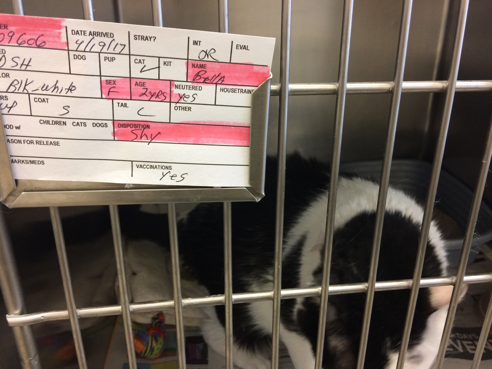
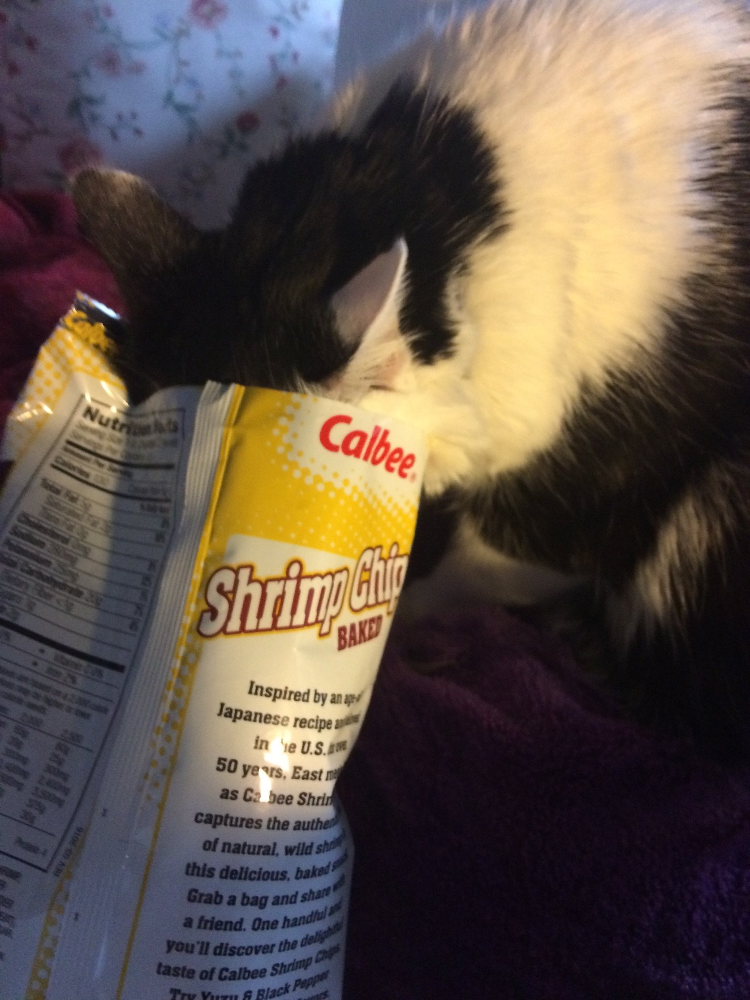
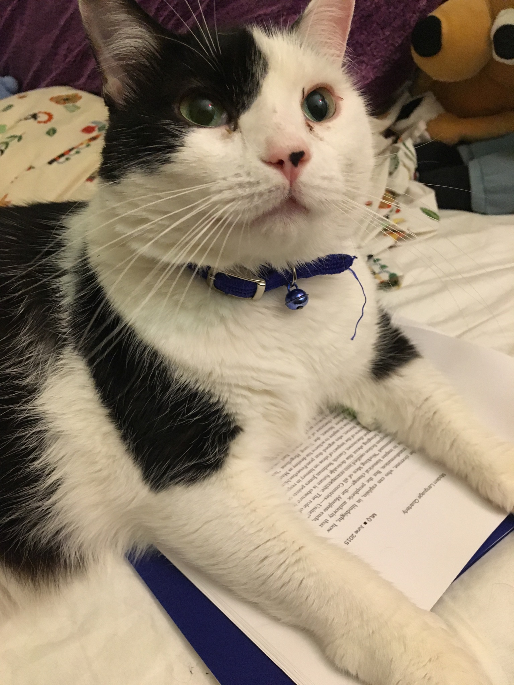
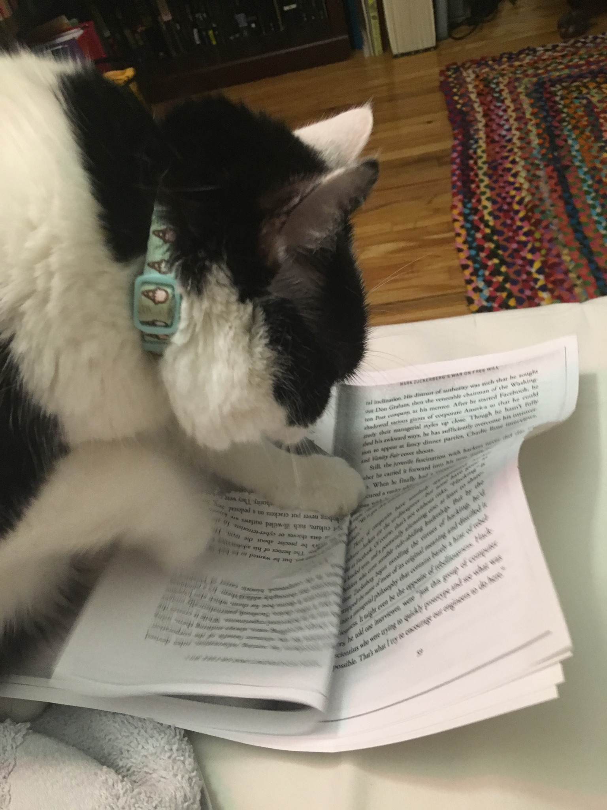
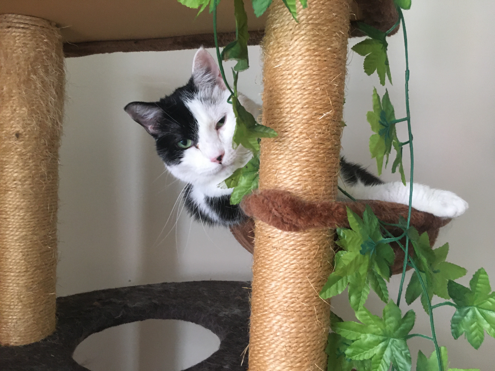
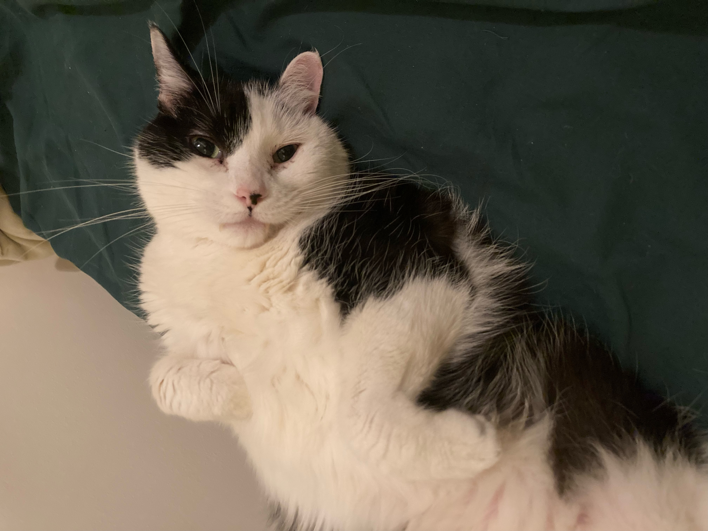
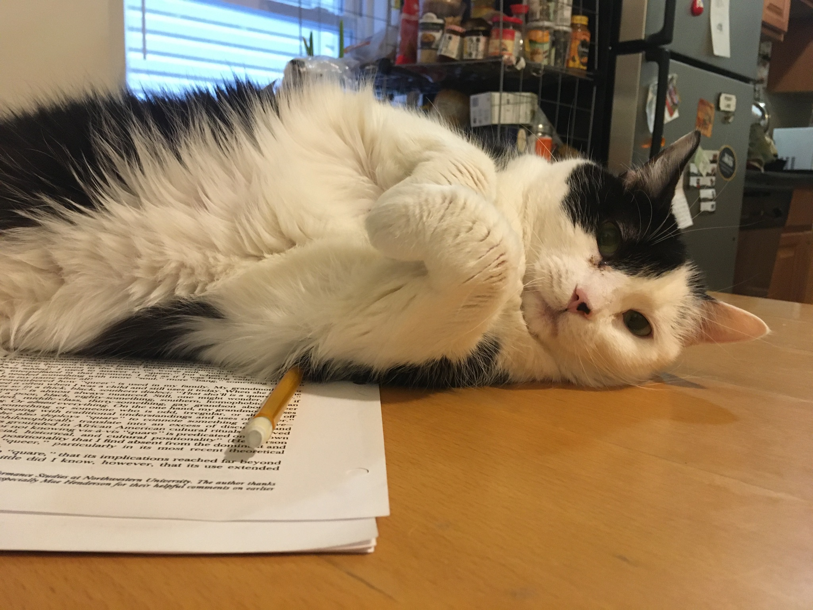
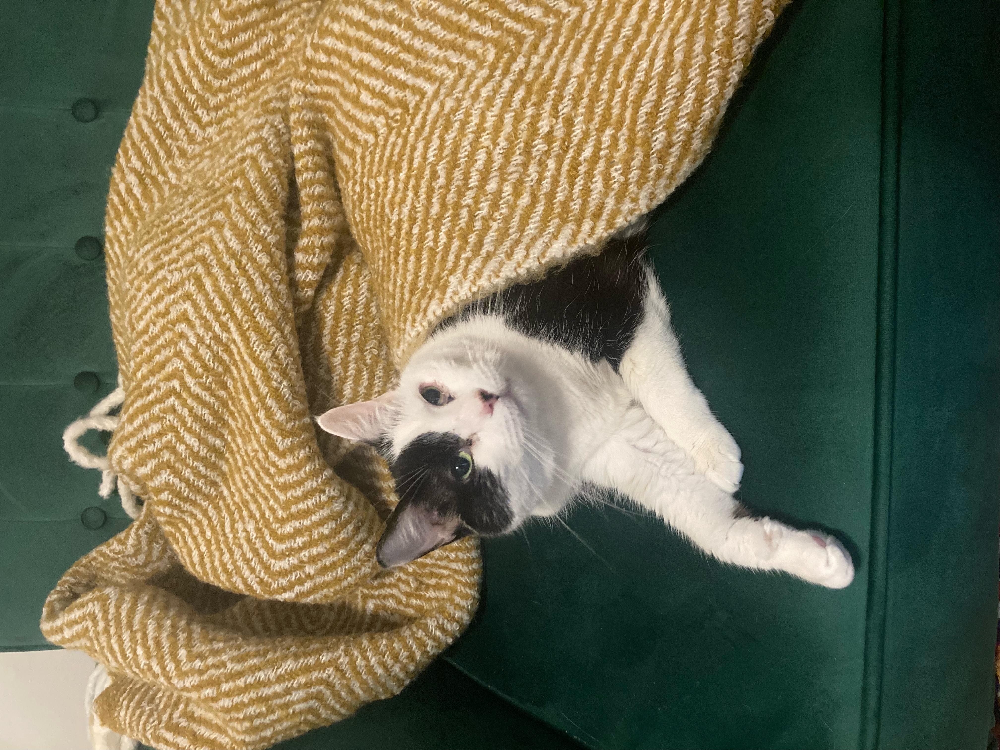
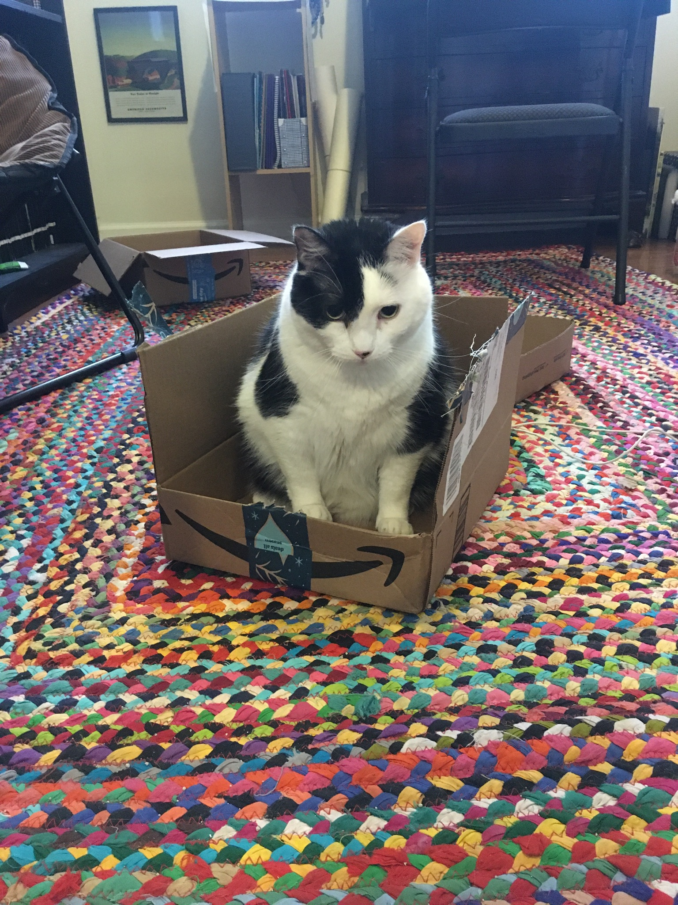

Yumi Dineen Shiroma's
Life of Signora Neroni
Chapter I. Our heroine, a plucky orphan, is lifted out of obscurity.
I adopted Signora Neroni from Morris Animal Refuge, the oldest animal shelter in the United States, on May 6, 2017. She had been in the shelter for about two weeks. According to the information posted on her cage, her disposition was "shy" and she was up to date on all her vaccines.
The shelter was full of cats that day, cats of all sizes: tiny kittens you could hold in the palm of your hand, and perhaps the single largest cat I had ever seen, a spherical tortoiseshell who lounged on the concrete floor as a volunteer stroked her stomach and she blinked her eyes at me slowly. I was overwhelmed by options, but Signora simplified the process by selecting me: when I asked one of the shelter volunteers to open her cage, she purred loudly then, when the cage had been closed again, reached her paw through the bars and slapped me.
Signora Neroni in a state of unfreedom.
Chapter II. A namesake.
On Signora's official paperwork, her name was Bella—but do cats understand their names? I've always thought it was more in the intonation. I decided to name her Signora Neroni, after a scene-stealing minor character in Anthony Trollope's Barchester Towers (1857). Signora Neroni (fictional) is an English woman who has separated—somewhat scandalously—from her Italian husband and returned to live in the English countryside. Due to a mobility disability, she is carried around in a sedan chair by a team of attractive male servants. At parties, she positions herself on a chaise longue, shows off her best jewelry, and seduces other women's husbands.[1]
Signora Neroni employing her feminine wiles, courtesy of Dr. Karen Bourrier on Twitter.
Chapter III. Signora Neroni settles in.
During her first week in my apartment, Signora Neroni stuck her head into a bag of shrimp chips and started to eat them. She also took a nap on a plastic-wrapped egg tart, and posed for a photograph on one of my baking trays.
Signora Neroni, greasy, snacks on some shrimp chips.
She was greasy, as is the case with many shelter cats; the stress of the shelter causes them to stop grooming themselves properly. Over time, however, as Signora Neroni settled into her new life, her grease began to diminish, and her coat became silky and smooth.
Chapter IV. Signora Neroni receives an education.
Signora Neroni accompanied me to New Jersey, where I was starting my PhD, and then back to Philadelphia, where—for better or worse—I continued it.
The Anglophone literary canon received mixed reviews. Early on in my coursework, Signora Neroni used a takeout box to shove a copy of Wordsworth's Major Works off the surface of my desk. Literary criticism was also hit or miss. Some arguments put a smile on Signora's face; others, she ripped apart.
Reviewer one.
Reviewer two.
More recently, Signora Neroni has been learning to code in JavaScript. But cats can't design websites...
... or can they?
Appendix. Nap spots.
It is important to receive at least eighteen hours of sleep per day. The following is a list of Signora Neroni-approved nap spots.
-
The cat basket. Signora Neroni did not understand what this object was for for several years, until, on New Years 2021, my friend Leo coaxed her inside with some strategically placed treats. Ever since then, this has been prime napping territory.
 -
The bottom left corner of the bed. Widely acknowledged as the superior corner of the bed; now perpetually covered in cat hair.
 -
The dining room table. Not the most comfortable spot, but satisfying when humans are trying to eat.
 -
The couch. The most comfortable part of the couch is the middle, on the seam.
 -
A box. Any box. Low sides preferred.

Footnotes.
[1] "Madame Neroni, though forced to give up all motion in the world, had no intention whatever of giving up the world itself. The beauty of her face was uninjured, and that beauty was of a peculiar kind. Her copious rich brown hair was worn in Grecian bandeaux round her head, displaying as much as possible of her forehead and cheeks. Her forehead, though rather low, was very beautiful from its perfect contour and pearly whiteness. Her eyes were long and large, and marvellously bright; might I venture to say bright as Lucifer's, I should perhaps best express the depth of their brilliancy. They were dreadful eyes to look at, such as would absolutely deter any man of quiet mind and easy spirit from attempting a passage of arms with such foes. There was talent in them, and the fire of passion and the play of wit, but there was no love. Cruelty was there instead, and courage, a desire of masterhood, cunning, and a wish for mischief. And yet, as eyes, they were very beautiful. The eyelashes were long and perfect, and the long, steady, unabashed gaze with which she would look into the face of her admirer fascinated while it frightened him. She was a basilisk from whom an ardent lover of beauty could make no escape. Her nose and mouth and teeth and chin and neck and bust were perfect, much more so at twenty-eight than they had been at eighteen. What wonder that with such charms still glowing in her face, and with such deformity destroying her figure, she should resolve to be seen, but only to be seen reclining on a sofa....
The 'signora' was not without talent and not without a certain sort of industry; she was an indomitable letter-writer, and her letters were worth the postage: they were full of wit, mischief, satire, love, latitudinarian philosophy, free religion, and, sometimes, alas, loose ribaldry. The subject, however, depended entirely on the recipient, and she was prepared to correspond with anyone but moral young ladies or stiff old women. She wrote also a kind of poetry, generally in Italian, and short romances, generally in French. She read much of a desultory sort of literature, and as a modern linguist had really made great proficiency. Such was the lady who had now come to wound the hearts of the men of Barchester." Trollope, Barchester Towers, Chapter IX.
© 2023 Yumi Dineen Shiroma and Signora Madeline Vesey Neroni